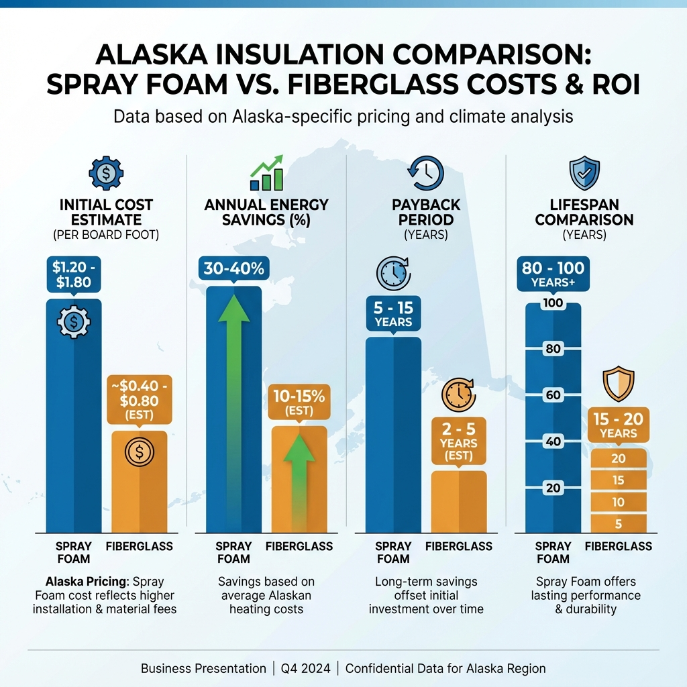

Alaska's extreme climate puts unique demands on home insulation that most Lower 48 building standards simply don't address. With winter temperatures regularly dropping below zero and annual heating costs ranging from $2,800 in Anchorage to over $8,000 in remote communities, the insulation choices you make directly impact your comfort and your wallet. This comprehensive guide covers everything Anchorage homeowners need to know about spray foam insulation—from choosing between open and closed cell to understanding costs, rebates, and Alaska building codes.
Whether you're building a new home, retrofitting an older property, or simply tired of drafty rooms and sky-high heating bills, spray foam insulation offers a proven solution for Alaska's challenging environment. As Anchorage's trusted insulation experts at Foamology Insulation, we've seen firsthand how proper insulation transforms homes across the region.
Why Spray Foam Insulation is Essential for Alaska Homes
Alaska's Unique Climate Challenges
Anchorage experiences temperature swings that would stress any building envelope. Typical annual temperatures range from -8°F in the coldest winter stretches to around 68°F in summer. According to the National Weather Service, Anchorage averages 10,000-11,000 heating degree days annually—more than double what most American cities experience.
Most of Alaska falls into Climate Zone 7 under the International Energy Conservation Code (IECC), with the coldest boroughs like Fairbanks, Nome, and the North Slope classified as Zone 8. These zones require the highest insulation R-values in the country, and meeting these standards with traditional insulation often means thick walls that eat into living space.
The subarctic climate also creates unique moisture challenges. When warm, humid indoor air meets cold surfaces inside wall cavities, condensation forms—a recipe for mold, rot, and structural damage. Alaska-specific building science, developed by institutions like the Cold Climate Housing Research Center, has shown that many conventional insulation techniques from temperate climates don't apply here and can actually cause problems when misapplied.
The Hidden Cost of Poor Insulation
Here's a statistic that surprises many homeowners: studies show that up to 40% of a building's total energy loss occurs through air infiltration—not through the insulation material itself, but through gaps, cracks, and thermal bypasses in the building envelope. Traditional batt insulation, no matter how carefully installed, cannot seal these air leaks.
The Alaska Housing Finance Corporation reports that homes properly retrofitted with insulation and air sealing improvements see average energy savings of 30% or more. For an Anchorage home spending $2,800 annually on heating, that translates to $840 or more in yearly savings. Over the 80-100 year lifespan of spray foam insulation, those savings compound dramatically.
This is where spray foam insulation distinguishes itself from alternatives. Unlike fiberglass batts or blown-in cellulose, spray foam expands upon application to fill every gap, crack, and crevice. It adheres directly to surfaces, creating both an insulation layer and a complete air barrier in one application. For Alaska's demanding climate, this dual function is critical.
Open Cell vs Closed Cell Spray Foam: Which is Best for Alaska?
Not all spray foam is created equal. Understanding the differences between open cell and closed cell spray foam is essential for making the right choice for your Alaska home.

Open cell vs closed cell spray foam comparison for Alaska applications
Understanding Closed Cell Spray Foam
Closed cell spray foam is the premium choice for cold climate applications. Its densely packed, completely closed cellular structure delivers R-6.5 to R-7 per inch—nearly double the insulating value of fiberglass. This higher R-value per inch means you can achieve Alaska's demanding insulation requirements without excessively thick walls.
Beyond R-value, closed cell foam offers several critical advantages for Alaska homes:
- Vapor Barrier Properties: At thicknesses greater than 1.5 inches, closed cell foam acts as a Class II vapor retarder, preventing moisture-laden indoor air from migrating into wall cavities.
- Structural Strengthening: Closed cell foam adds rigidity to walls and roofs, helping structures withstand heavy snow loads and fierce Alaska winds.
- Water Resistance: Closed cell foam is essentially waterproof and doesn't provide a food source for mold growth.
Understanding Open Cell Spray Foam
Open cell spray foam uses a different formulation that creates larger, partially open cells. This structure delivers R-3.5 to R-4 per inch—good insulation value, but significantly less than closed cell. The foam is lighter, more flexible, and more permeable to both air and moisture.
Open cell foam excels at soundproofing due to its ability to absorb sound waves. It costs less per board foot than closed cell, making it attractive for budget-conscious projects. However, open cell foam does NOT act as a vapor barrier and is not waterproof.
The Alaska Recommendation: Closed Cell
For exterior applications in Alaska—including exterior walls, attics, crawl spaces, and foundations—closed cell spray foam is strongly recommended. Research from the Cold Climate Housing Research Center has demonstrated that foam can act as a "double vapor barrier" trapping moisture when improperly installed. Their findings establish that for exterior foam retrofits in Alaska, at least 2/3 of the total wall R-value should be on the outside of the sheathing to keep wall framing warm and prevent condensation.
| Feature | Closed Cell | Open Cell |
|---|---|---|
| R-value per inch | R-6.5 to R-7 | R-3.5 to R-4 |
| Vapor barrier | Yes (>1.5") | No |
| Moisture resistance | Excellent | Poor |
| Cost per board foot | $1.20-$1.80 | $0.70-$1.10 |
| Alaska recommendation | Yes - exterior | Limited interior use |
How Spray Foam Prevents Ice Dams in Alaska
Ice dams cause thousands of dollars in damage to Alaska homes every winter. Understanding how they form—and how spray foam prevents them—can save you from costly repairs and water damage.

How spray foam insulation prevents ice dams on Alaska roofs
The Ice Dam Problem
Ice dams form when heat escapes through a poorly insulated or air-sealed attic, warming the roof deck above. Snow on the warm section of roof melts, and the water runs down toward the eaves. But the eaves, extending beyond the heated building envelope, remain cold. When the meltwater reaches these cold eaves, it refreezes, creating a dam of ice.
As more snow melts and more ice accumulates, water backs up behind the dam. This water works its way under shingles and into the home, damaging ceilings, walls, insulation, and creating conditions for mold growth. In severe cases, the weight of ice buildup can damage gutters and roofing materials.
The Spray Foam Solution
Spray foam insulation attacks the ice dam problem at its source. When properly applied to the attic floor or roof deck, closed cell spray foam creates a monolithic air barrier that eliminates the heat loss causing ice dams.
The key is complete coverage. Spray foam expands to fill gaps around penetrations, seals the connection between ceiling and walls, and eliminates the thermal bypasses that allow warm air to escape. Combined with R-49 or higher insulation values, this comprehensive air sealing stops the chain of events that leads to ice dams.
Spray Foam Insulation Cost in Anchorage: 2025 Pricing Guide
Understanding spray foam costs helps you budget effectively and evaluate the true value of your investment. Here's what Anchorage homeowners can expect to pay.
Spray foam insulation cost and ROI comparison for Alaska
Understanding Spray Foam Pricing
Spray foam insulation is typically priced per board foot—a unit measuring 12 inches by 12 inches by 1 inch thick. This differs from fiberglass, which is usually priced per square foot. Several factors affect final project costs:
- Foam type: Closed cell costs more than open cell
- Thickness required: Determined by your R-value goals and code requirements
- Accessibility: Difficult-to-reach areas increase labor costs
- Project size: Larger projects often have lower per-board-foot rates
- Location: Remote Alaska sites may incur travel costs
Current Anchorage Pricing
Based on current market rates in the Anchorage area:
- Closed Cell Spray Foam: $1.20-$1.80 per board foot
- Open Cell Spray Foam: $0.70-$1.10 per board foot
- 1,000 sq ft project (3" closed cell): $2,200-$5,500
- Whole-house projects: $7,000-$15,000+
True Cost Comparison: Spray Foam vs Fiberglass
When you factor in Alaska's high energy costs and the 30-40% savings from spray foam, the payback period typically runs 5-15 years. After that, you're enjoying pure savings for decades. And unlike fiberglass, you won't need to replace spray foam multiple times over the life of your home.
| Factor | Spray Foam | Fiberglass |
|---|---|---|
| Initial cost | $$ - $$$ | $ |
| Lifespan | 80-100 years | 15-20 years |
| Energy savings | 30-40% | 10-15% |
| Air sealing | Yes | No |
| Maintenance | None | Periodic replacement |
Alaska Energy Rebates and Tax Credits for Spray Foam
There's never been a better time to upgrade your insulation. Federal programs have allocated unprecedented funding for home energy efficiency in Alaska, making spray foam more affordable than ever.

Alaska energy rebates and tax credits available for insulation upgrades
Federal HOME Efficiency Rebates
The Department of Energy has allocated $74 million to Alaska for Home Efficiency Rebates through the Alaska residential energy rebates program:
- 20-35% energy savings: Up to $2,000 rebate (50% of project cost)
- 35%+ energy savings: Up to $4,000 rebate (50% of project cost)
- Low/moderate income households: Double the rebates (up to $8,000)
Point-of-Sale Rebates (HEEHRA)
The Home Electrification and Appliance Rebates program offers immediate point-of-sale discounts:
- Up to $1,600 for insulation and air sealing
- 100% coverage for households under 80% Area Median Income
- 50% coverage for households under 150% AMI
Federal Tax Credits
The Inflation Reduction Act provides additional savings through federal insulation tax credits:
- Up to $1,200 annually for insulation improvements
- 30% of project cost through 2032
- Can be combined with rebates for maximum savings
How to Access These Programs
To take advantage of Alaska's energy efficiency rebates, contact AHFC at 1-877-AKRebate (1-877-257-3228). Working with an experienced contractor who understands these weatherization programs can help maximize your available incentives.
Alaska Building Codes and Insulation Requirements
Understanding Alaska's insulation requirements ensures your project meets legal standards and qualifies for programs that require code compliance.

Alaska R-value requirements by climate zone
Understanding Climate Zones in Alaska
Alaska uses the International Energy Conservation Code (IECC) with state-specific amendments. Most of Alaska, including Anchorage, falls into Climate Zone 7. The coldest boroughs—including Fairbanks, Nome, Bethel, and the North Slope—are classified as Zone 8. According to ENERGY STAR, these are the coldest climate zones in the IECC classification system.
Minimum Insulation Requirements
The Alaska Building Energy Efficiency Standard (BEES) establishes minimum requirements for AHFC-financed construction:
- Walls: R-21 minimum
- Ceilings: R-38 minimum
- Foundations and rim boards: R-10 minimum
- Minimum 5-Star energy rating required
Meeting Code with Spray Foam
Spray foam's high R-value per inch makes it efficient for meeting Alaska's demanding requirements:
- 3 inches of closed cell = R-21 (meets wall minimum)
- 6 inches of closed cell = R-42 (exceeds ceiling minimum)
- 8 inches of closed cell = R-56 (approaches attic recommendations)
Alaska building codes also require a thermal barrier (typically ½-inch drywall) over spray foam in occupied spaces for fire safety.
Is Spray Foam Safe? What Alaska Homeowners Need to Know
During Installation
Spray foam involves a chemical reaction between two components—an isocyanate (A-side) and a polyol resin blend (B-side). During installation, this reaction produces fumes that can cause respiratory irritation. According to EPA guidelines, homeowners should vacate during installation and until proper curing occurs.
After Installation
Once fully cured—typically 24-48 hours—spray foam insulation is considered safe and chemically inert. The EPA confirms that properly cured spray foam does not continue to off-gas harmful chemicals. Many homeowners actually report improved indoor air quality after spray foam installation because the air sealing eliminates drafts that can carry outdoor pollutants.
Professional Installation is Essential
Spray foam application requires specialized equipment and technical skill that make it unsuitable for DIY installation. Look for contractors with SPFA certification or equivalent training, proper licensing and insurance, and experience with Alaska building codes.
Choosing a Spray Foam Contractor in Anchorage
What to Look For
- Licensed, bonded, and insured in Alaska
- SPFA certification or equivalent professional training
- Alaska-specific experience with cold climate installation
- References from local projects
- Understanding of AHFC/BEES requirements
- Knowledge of rebate programs and documentation requirements
Questions to Ask
- What type of foam do you recommend for my specific application?
- What is your experience with Alaska building codes and BEES requirements?
- Do you offer assistance with rebate applications and documentation?
- What is the expected curing time and when can we re-occupy?
- Do you provide blower door testing to verify air sealing performance?
Why Choose Foamology Insulation
At Foamology Insulation, we bring local Anchorage expertise to every project. Our team understands Alaska's unique challenges—from extreme cold installation techniques to AHFC compliance requirements. We're fully licensed, bonded, and insured, and we stand behind our work.
Ready to improve your home's comfort and energy efficiency?
Contact us for a free estimate and learn how spray foam insulation can transform your Alaska home.
Frequently Asked Questions About Spray Foam in Alaska
Is spray foam insulation suitable for Alaska's extreme cold?
Yes, spray foam insulation is specifically designed to perform in extreme cold conditions. Closed cell spray foam maintains its R-value and structural integrity even at -40°F or colder. The air sealing properties are particularly valuable in Alaska, where preventing heat loss from air infiltration is critical for energy efficiency and comfort.
How much does spray foam insulation cost in Anchorage?
In the Anchorage area, closed cell spray foam typically costs $1.20-$1.80 per board foot installed. For a typical 1,000 square foot area with 3 inches of closed cell foam, expect to pay $2,200-$5,500. Whole-house projects generally range from $7,000-$15,000 depending on size and scope.
Which type of spray foam is best for Alaska homes?
Closed cell spray foam is strongly recommended for all exterior applications in Alaska homes, including walls, attics, crawl spaces, and foundations. Its higher R-value per inch, vapor barrier properties, and moisture resistance make it the clear choice for Alaska's extreme climate. Open cell foam has limited use for interior soundproofing applications.
Will spray foam reduce my heating bills?
Yes, homeowners typically see 30-40% reduction in heating costs after spray foam installation. For an Anchorage home spending $2,800 annually on heating, that translates to $840 or more in yearly savings. These savings come from both the high R-value insulation and the complete air sealing that prevents heat loss through gaps and cracks.
How long does spray foam insulation last?
Spray foam insulation lasts 80-100 years with proper installation—essentially the lifetime of most homes. Unlike fiberglass which can sag, settle, and lose R-value over time, spray foam maintains its performance permanently. It requires no maintenance and doesn't need replacement like traditional insulation.
Is spray foam safe once it's installed?
Yes, spray foam is completely safe after the 24-48 hour curing period. Once fully cured, the foam is chemically inert and does not off-gas harmful substances. The EPA confirms that properly installed and cured spray foam poses no ongoing health concerns. Many homeowners report improved indoor air quality because the air sealing eliminates drafts carrying outdoor pollutants.
Does spray foam prevent ice dams?
Yes, spray foam is one of the most effective solutions for preventing ice dams. When properly applied to the attic floor or roof deck, it creates a complete air barrier that eliminates the heat loss causing ice dams. Combined with adequate R-value (R-49+), spray foam addresses both the insulation and air sealing needed to prevent ice dam formation.
Can spray foam be installed in Alaska's cold weather?
Yes, experienced Alaska contractors install spray foam year-round. However, ideal application temperatures are 60-90°F, so cold weather installations may require temporary heating of the workspace. Professional contractors know how to manage these conditions for successful winter installations.
Does spray foam act as a vapor barrier?
Closed cell spray foam acts as an effective vapor barrier when installed at thicknesses greater than 1.5 inches. This prevents moisture-laden indoor air from migrating into wall cavities where it could condense on cold surfaces. Open cell spray foam does NOT act as a vapor barrier and would require a separate vapor retarder in Alaska applications.
What R-value does spray foam provide?
Closed cell spray foam provides R-6.5 to R-7 per inch of thickness—nearly double the R-value of fiberglass at R-3.2 per inch. Open cell spray foam provides R-3.5 to R-4 per inch. For reference, 3 inches of closed cell foam delivers approximately R-21, meeting Alaska's wall insulation minimums.
Are there rebates for spray foam insulation in Alaska?
Yes, significant rebates are available. Federal HOME Efficiency Rebates offer $2,000-$8,000 depending on energy savings achieved (Alaska received $74 million in funding). Point-of-sale rebates through HEEHRA provide up to $1,600 for insulation. Federal tax credits offer up to $1,200 annually. Contact AHFC at 1-877-AKRebate to learn more.
Does spray foam meet Alaska building codes?
Yes, spray foam meets and exceeds Alaska building code requirements when properly installed. It easily achieves the R-21 wall, R-38 ceiling, and R-10 foundation minimums specified in the Building Energy Efficiency Standard (BEES). All installations must include the required thermal barrier (typically ½-inch drywall) in occupied spaces.
Can spray foam be added to existing homes?
Yes, spray foam is excellent for retrofitting existing homes. It can be installed in walls (from interior or exterior), attics, crawl spaces, rim joists, and around foundations. For retrofits, the 2/3 to 1/3 ratio should be maintained—at least 2/3 of total R-value on the exterior of sheathing to prevent moisture issues.
Does spray foam prevent mold?
Closed cell spray foam is waterproof and does not absorb moisture, eliminating the conditions that allow mold growth. It doesn't provide a food source for mold. Additionally, the air sealing prevents humid indoor air from reaching cold surfaces where condensation (and subsequent mold) could form.
How long do I need to stay out of my house after spray foam installation?
Most manufacturers recommend 24-48 hours for full curing before re-occupancy. During this time, the chemical reaction completes and any installation fumes dissipate. Your contractor will provide specific guidance based on the products used, project scope, and ventilation conditions.
Spray Foam Applications for Alaska Homes
Understanding where spray foam works best helps you prioritize your insulation investment for maximum benefit.
Attic Insulation
Attic insulation is often the highest priority for spray foam in Alaska homes. Heat rises, and a poorly insulated or air-sealed attic allows massive heat loss—leading to high energy bills and ice dam problems. Spray foam applied to the attic floor creates both the insulation and air barrier needed to contain heat in the living space.
Crawl Space Insulation
Alaska crawl spaces face unique challenges including frozen pipes, extreme cold floor surfaces, and moisture issues. Closed cell spray foam applied to crawl space walls and rim joists creates a conditioned crawl space that protects pipes, improves floor comfort, and prevents moisture problems.
Wall Insulation
For new construction, spray foam in wall cavities provides superior insulation and air sealing compared to traditional batts. For existing homes, spray foam can be applied during renovations. Closed cell foam's structural strengthening properties add wind and snow load resistance—valuable in Alaska's severe weather.
Rim Joists and Foundation
The rim joist area—where floor systems meet foundation walls—is a notorious source of air leaks and heat loss. A small amount of closed cell spray foam in this area can dramatically improve comfort and energy efficiency.
Service Areas: Anchorage and Beyond
Foamology Insulation proudly serves homeowners throughout the Anchorage metropolitan area and surrounding communities:
Whether you're in urban Anchorage or a more rural location, we bring the same quality, expertise, and commitment to every project. Our team understands the specific challenges of Alaska construction and can help you choose the right insulation approach for your home's unique needs.
Take the Next Step Toward a More Comfortable Home
Alaska's extreme climate demands exceptional insulation, and spray foam delivers the performance your home needs. From 30-40% energy savings to ice dam elimination and 80-100 year durability, spray foam insulation is an investment that pays dividends for decades.
With federal rebates up to $8,000 and tax credits providing additional savings, there's never been a better time to upgrade your home's insulation. Contact Foamology Insulation today for a free estimate and discover how spray foam can transform your Alaska home.
Get Your Free Estimate Today
Ready to improve your home's comfort and energy efficiency?
Visit foamologyinsulation.com or call us to schedule your free consultation.